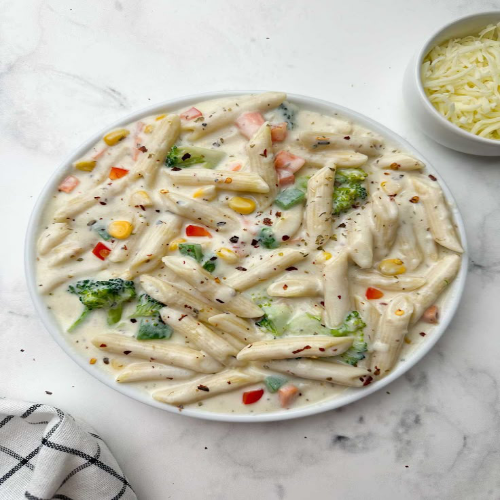

Back to Home

Pasta
Veg pasta is a delightful combination of al dente pasta, fresh vegetables, and a flavorful
sauce, making it a wholesome and satisfying meal. Perfect for lunch or dinner, this dish
is customizable with your favorite veggies and seasonings. Whether coated in creamy
Alfredo, tangy marinara, or zesty pesto, veg pasta is a go-to comfort food that pleases
everyone at the table.
Prep Time: 10 min
Cook Time: 20 min
Total Time: 30 min
0 Likes
Ingredients
- 200g pasta (penne, spaghetti, etc.)
- 2 cups mixed vegetables (bell peppers, broccoli, carrots)
- 2 tbsp olive oil
- 1 cup marinara or white sauce
- Salt, pepper, and Italian herbs to taste
Preparation
- Boil the pasta as per package instructions.
- Heat olive oil in a pan and sauté the vegetables.
- Add the sauce and seasonings, then mix in the cooked pasta.
- Serve hot with grated cheese (optional).